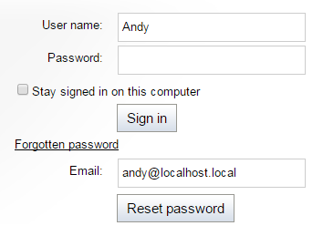

Forgotten password
If users forget their password, they may reset it, provided they have access to the email address specified for their account. A password may be reset by submitting a request through one of the website's sign-in forms.
Note: Resetting of passwords is not possible for external users (for example Active Directory users created using Mixed-mode Windows authentication).
On the live site, users can recover their password through Logon form web parts that have their Allow forgotten password retrieval property enabled.
On the sign in page of the administration interface, a Forgotten password link is included by default.
You can hide the link by adding the following key to the /configuration/appSettings section of your web.config file:
<add key="CMSShowForgottenPassLink" value="false" />When submitting a password reset request, users must type in their email address. The request affects only the user account with the corresponding email address. If the entered email address does not correspond to any registered user, the system does not send the email.
Password recovery emails are sent from the address specified in the Send password emails from setting in Settings -> Security & Membership -> Passwords.
Password reset functionality
Password reset requires email approval from the affected user. The main security benefits of this approach are:
Passwords cannot be read from the email by potential attackers.
The reset links are only valid temporarily. The time period during which the links are valid can be specified in hours via the Reset password interval setting.
After someone uses a password reset link, it becomes invalid and cannot be accessed again.
Users who submit a password recovery request through a sign-in form first receive an email containing a link.
Note: Certain types of web filtering software may interfere with password reset links. If an automatic tool accesses the password reset page before it is opened by the actual user's client, the password recovery request will be invalid.
When users click the link in the email, they are redirected to the default ~/CMSModules/Membership/CMSPages/ResetPassword.aspx system page, where they can set a new password. The URL of the link contains a token in its query string that automatically identifies the user whose password should be changed.
If you wish to use a custom page for this purpose, create a new page on the website and place the Reset password web part on it. This web part displays a form with the same functionality as described above for the ResetPassword.aspx system page. After you create the page, enter its URL into the Reset password page URL website setting in Settings -> Security & Membership -> Passwords, or into the same property of individual Logon form web parts.
If the Send password reset confirmation email setting is enabled, users receive an email confirming the password reset.
Recovering administrator password
If you happen to lose the password for your administrator account and cannot access the administration interface, you can use one of the following approaches to recover it:
Reset password via a web.config key - insert the CMSAdminEmergencyReset key to the appSettings section of your web.config. For example:
<add key="CMSAdminEmergencyReset"value="admin;password;true"/>admin - this value specifies the user name of the new account.
password - this value specifies the password for the new account – you should change it to your own value.
The third parameter is optional and indicates whether you want to create a new user with the Global administrator privilege level.
The key will be automatically deleted after you gain access to the user interface.
Clear password in the database - find your user record in the CMS_User table and clear the contents of the UserPassword column. Then sign in to the administration interface with a blank password and set a new password.
Password recovery email templates
The emails sent to users during the password retrieval process are based on email templates, which can be found in the Email templates application. The following password‑related templates are available:
Membership - Change password request – sent as a reply to password recovery requests.
Membership - Password reset confirmation – sent to the user upon a successful password reset if the Send password reset confirmation email setting is enabled. Also sent when an administrator manually sets a new password for a user.
Membership - Changed password – sent to users if a new password is generated for their account by an administrator.
These templates can be edited as needed, so you may fully customize the content of the emails. You can enter context macros to include dynamic values in the template text:
|
Template |
Context-specific macros |
|
Change password request |
|
|
Password reset confirmation |
|
|
Changed password |
|
In addition to the special macros listed above, you can also use all other standard macro expressions in the templates. See the Macro expressions chapter for more information about macro expressions in Kentico.